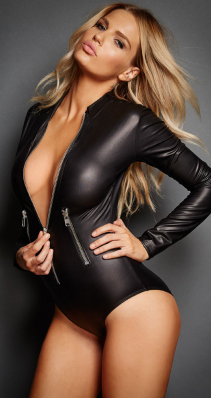
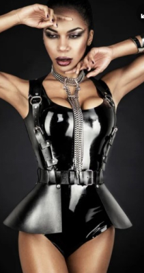

Cocky&Clara
Про нас
Вочевидь, зараз не всі пригадають цю серпневу дату – вісімнадцяте святкування Дня Незалежності України. Відлік десятилітньої історії Вишиванкового фестивалю розпочався саме тоді, коли сімдесят дев’ять людей, убраних у виши́ванки, утворили вздовж Потьомкінських сходів так званий «живий ланцюг». Амбітні плани організаторів повністю виправдалися: він сягнув-таки берега моря. Простягаючись білою ниткою від п’єдесталу пам’ятника Рішельє, ланцюг із року в рік ставав усе довшим, а разом із цим зростало й усвідомлення Одеси як українського міста. Зростало настільки, що в 2014 році, незважаючи на невпинну зливу, для участі в акції «Вишиванковий ланцюг» вишикувалася півторатисячна черга, утворивши нескінченне живе море виши́ванок.
Вочевидь, зараз не всі пригадають цю серпневу дату – вісімнадцяте святкування Дня Незалежності України. Відлік десятилітньої історії Вишиванкового фестивалю розпочався саме тоді, коли сімдесят дев’ять людей, убраних у виши́ванки, утворили вздовж Потьомкінських сходів так званий «живий ланцюг». Амбітні плани організаторів повністю виправдалися: він сягнув-таки берега моря. Простягаючись білою ниткою від п’єдесталу пам’ятника Рішельє, ланцюг із року в рік ставав усе довшим, а разом із цим зростало й усвідомлення Одеси як українського міста. Зростало настільки, що в 2014 році, незважаючи на невпинну зливу, для участі в акції «Вишиванковий ланцюг» вишикувалася півторатисячна черга, утворивши нескінченне живе море виши́ванок.
Вочевидь, зараз не всі пригадають цю серпневу дату – вісімнадцяте святкування Дня Незалежності України. Відлік десятилітньої історії Вишиванкового фестивалю розпочався саме тоді, коли сімдесят дев’ять людей, убраних у виши́ванки, утворили вздовж Потьомкінських сходів так званий «живий ланцюг». Амбітні плани організаторів повністю виправдалися: він сягнув-таки берега моря. Простягаючись білою ниткою від п’єдесталу пам’ятника Рішельє, ланцюг із року в рік ставав усе довшим, а разом із цим зростало й усвідомлення Одеси як українського міста. Зростало настільки, що в 2014 році, незважаючи на невпинну зливу, для участі в акції «Вишиванковий ланцюг» вишикувалася півторатисячна черга, утворивши нескінченне живе море виши́ванок.